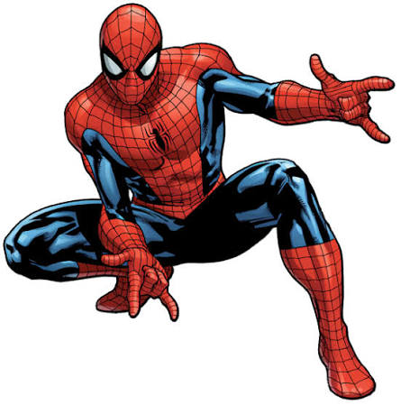
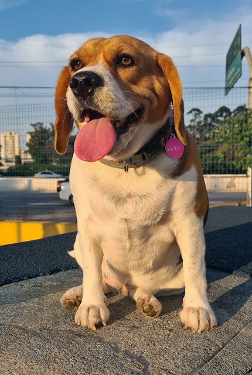
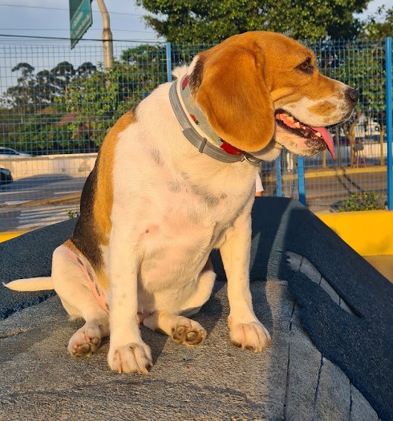
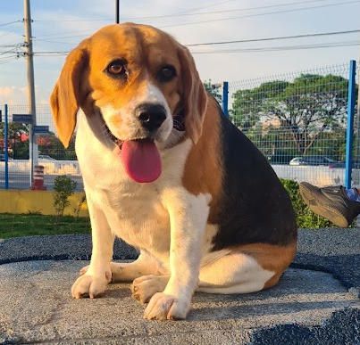
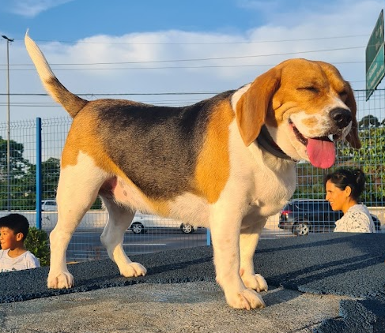
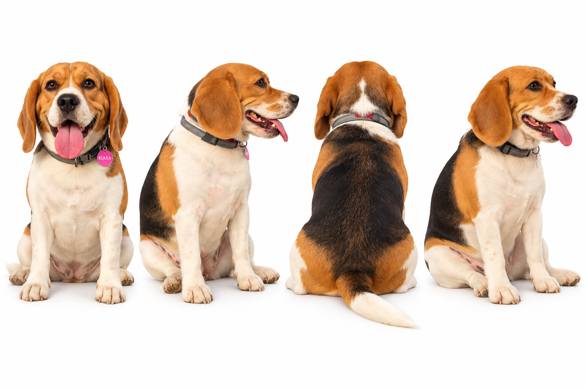

A qualidade da geometria 3D gerada depende 90% da clareza da informação fornecida à IA. Siga estas diretrizes práticas:
Priorize luz difusa e neutra sem sombras duras. Oclusões e contrastes extremos fazem a IA confundir sombras com relevos ou furos na malha.
Isole o objeto com fundo completamente limpo. Qualquer IA atual (ChatGPT, Photoshop, Photoroom) remove o fundo em segundos, evitando artefatos.
Ao trabalhar com vistas diferentes, use o ChatGPT para compor uma única imagem horizontal contendo 2, 3 ou 4 ângulos na mesma pose e escala.
Para personagens e figuras vivas, prefira poses em "A" ou com membros afastados do tronco para facilitar o fatiamento e a colocação de suportes.
Prompt de texto descritivo ou imagens de referência limpas.
Interpretação e síntese volumétrica pelo motor do Meshy AI.
Inspeção de faces, estanqueidade (manifold) e detalhes.
Aplicação de mapas cromáticos e teste de identidade visual.
Orientação, suportes em árvore e fabricação física.
Acompanhe a progressão prática de cada método de entrada no Meshy AI e interaja em 360° com os modelos:
Nesta etapa, iniciamos gerando uma peça prática utilitária (suporte de celular) utilizando exclusivamente engenharia de prompt descritiva.
A IA gerou um objeto visualmente futurista e coerente, mas não respeitou a abertura funcional para a passagem do cabo.
O próximo passo utilizou apenas uma única imagem de referência frontal: o Homem-Aranha em uma pose estática com detalhes no traje.
O símbolo de aranha nas costas não existia na foto frontal de entrada, mas apareceu modelado nas costas do 3D. Como o modelo não tinha visão traseira, ele inferiu e completou a anatomia baseado no seu repertório prévio do personagem.

Para elevar a fidelidade, utilizamos fotos da Kiara. Primeiro, enviamos 4 fotos para o ChatGPT unificar em uma única composição de 4 ângulos limpos em fundo branco.
• Geometria Bruta: A modelagem não captou fielmente a morfologia da Kiara (que é mais baixinha e gordinha), aproximando-se de uma silhueta genérica de cão padrão.
• Após Texturização: O resultado visual mudou radicalmente. As cores e manchas fiéis à referência trouxeram de volta a identidade do animal.





O quarto passo testou o fluxo com um preset estilizado da plataforma: o gerador Chibi do Meshy AI.
Nota sobre monetização do Meshy: Ao concluir a geração, a plataforma direciona para encomenda da miniatura física pronta, mas usuários com plano PRO podem baixar o arquivo 3D bruto para fatiamento próprio.
A IA gera uma hipótese volumétrica coerente. Superfícies ocultas ou ângulos não fornecidos são preenchidos com inferência estatística do modelo.
Uma peça pode parecer pronta na tela graças a sombras e texturas ricas, mas apresentar paredes frágeis ou geometrias que falham na fatiadora física.
Fornecer múltiplos ângulos estabiliza as proporções gerais, mas traços biométricos específicos ainda tendem a se aproximar de modelos médios pré-treinados.
O Meshy AI acelera expressivamente a etapa de concepção tridimensional e prototipagem rápida. No entanto, o resultado visual gerado por IA não substitui os requisitos de engenharia, tolerâncias dimensionais e a inspeção humana especializada para a manufatura aditiva.